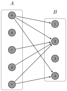
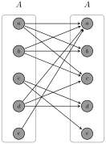
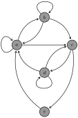

Recall from Section 3.5 that the Cartesian product of two sets \(A\) and \(B\text{,}\) written \(A\times B\text{,}\) is the set of all ordered pairs \((a,b)\text{,}\) where \(a\in A\) and \(b\in B\text{.}\) That is, \(A\times B=\{(a,b)\mid a\in A, b\in B\}\text{.}\)
Definition7.1.
Let \(A\) and \(B\) be sets. A relation \(R\) from \(A\) to \(B\) is a subset of \(A \times B\text{.}\) If \(R\) is a relation from \(A\) to \(B\) and \((a,b)\in {R}\text{,}\) then we say that \(a\) is related to \(b\) and we may write \(\tcboxmath{aR b}\) in place of \((a,b)\in{R}\text{.}\) If \(R\) is a relation from \(A\) to the same set \(A\text{,}\) then we say that \(R\) is a relation on \(A\text{.}\)
Example7.2.
The set \(\mathbb{N}\times \mathbb{R}\) from Problem 3.55 is an example of a relation on \(\mathbb{R}\) since \(\mathbb{N}\times \mathbb{R}\) is a subset of \(\mathbb{R}\times \mathbb{R}\text{.}\)
It is important to notice that the order in which we write things for relations matters. In particular, if \(R\) is a relation from \(A\) to \(B\) and \(a R b\text{,}\) then it may or may not be the case that \(bR a\text{.}\)
Example7.3.
If \(A=\{a,b,c,d,e\}\) and \(B=\{1,2,3,4\}\text{,}\) then the set of ordered pairs
is an example of a relation from \(A\) to \(B\text{.}\) In this case, we could write \((c,2)\in{R}\) or \(cR 2\text{.}\) We could also say that \(a\) is related to 1, 2, and 4.
Example7.4.
As in the previous example, let \(A=\{a,b,c,d,e\}\text{.}\) One possible relation on \(A\) is given by
Consider the set of accounts \(A\) on the social media platform Twitter. On Twitter, each account has a set of accounts that they follow. We can model this situation mathematically using a relation on \(A\text{.}\) Define \(T\) on \(A\) via \(xTy\) if \(x\) follows \(y\) on Twitter. As a set
You are already familiar with many relations. For example, \(=\text{,}\)\(\leq\text{,}\) and \(\lt\) are each examples of relations on the real numbers. We could say that \((3,\pi)\) is in the relation \(\leq\) and the relation \(\lt\) since \(3\leq \pi\) and \(3\lt \pi\text{.}\) However, \((3,\pi)\) is not in the relation \(=\) since \(3\neq \pi\text{.}\) Also, notice that order matters for the relations \(\leq\) and \(\lt\) yet does not for \(=\text{.}\) For example, \((-\sqrt{2}, 4)\) is in the relation \(\leq\) while \((4,-\sqrt{2})\) is not.
Example7.7.
Define the relation \(S\) from \(\{-1,1\}\) to \(\mathbb{Z}\) via \(1Sx\) if \(x\) is even and \(-1Sx\) if \(x\) is odd. That is, \(1\) is related to all even integers and \(-1\) is related to all odd integers.
Example7.8.
Let \(A\) be any set. Since \(\emptyset \subseteq A\times A\text{,}\) the empty set forms a relation on \(A\text{.}\) This relation is called the empty relation on \(A\text{.}\)
Relations can be represented using digraphs. A digraph (short for directed graph) is a discrete graph that consists of a set of vertices connected by edges, where the edges have a direction associated with them. If \(R\) is a relation from \(A\) to \(B\text{,}\) then the elements of \(A\) and \(B\) are the vertices of the digraph and there is a directed edge from \(a\in A\) to \(b\in B\) if \((a,b)\) is in the relation \(R\) (i.e., \(aR b\)). We can visually represent digraphs by using dots to represent the vertices and arrows to represent directed edges. We will not make a distinction between a digraph and its visual representation. Utilizing a digraph to represent a relation may be impractical if there is a large number of vertices or directed edges.
Example7.9.
Consider the relation given in Example 7.3. The corresponding digraph is depicted in Figure 7.10. Notice that we have placed the vertices corresponding to elements of \(A\) on the left and the elements of \(B\) on the right. This is standard practice, but what really matters is the edge connections not how the vertices are placed on the page.

Figure7.10.Digraph for a relation from \(A=\{a,b,c,d,e\}\) to \(B=\{1,2,3,4\}\text{.}\)
Problem7.11.
Let \(A=\{1,2,3,4,5,6\}\) and \(B=\{1,2,3,4\}\) and define \(D\) from \(A\) to \(B\) via \((a,b)\in D\) if \(a-b\) is divisible by 2. List the ordered pairs in \(D\) and draw the corresponding digraph.
If \(R\) is a relation on \(A\) (i.e., a relation from \(A\) to \(A\)), then we can simplify the structure of the digraph by only utilizing one copy of \(A\) for the vertices. In this case, we may have directed edges that point from a vertex to itself. When drawing digraphs for a relation on a set, we will default to this simplified digraph (like the one depicted in Figure 7.13.(b)).
Example7.12.
Figure 7.13.(a) represents the relation of Example 7.4 as a digraph from \(A\) to \(A\) while the digraph in Figure 7.13.(b) provides a streamlined representation of the same relation that uses the elements in \(A\) only once instead of twice.
(a)
(b)
Figure7.13.Two variations of digraphs for a relation on \(A=\{a,b,c,d,e\}\text{.}\)
Problem7.14.
Let \(A=\{1,2,3,4,5,6\}\) and define \(|\) on \(A\) via \(x|y\) if \(x\) divides \(y\text{.}\) List the ordered pairs in \(|\) and draw the corresponding digraph.
Problem7.15.
Let \(A=\{a,b,c,d\}\) and define \(R\) on \(A\) via
Draw the digraph for the empty relation on \(A\text{.}\)
We can also visually represent a relation by plotting the points in the relation. In particular, if \(R\) is a relation from \(A\) to \(B\) and \(aR b\text{,}\) we can plot all points \((a,b)\) that satisfy \(aR b\) in two dimensions, where we interpret the set \(A\) to be the horizontal axis and \(B\) to be the vertical axis. We will refer to this visual representation of a relation as the graph of the relation.
Example7.16.
When we write \(x^2+y^2=1\text{,}\) we are implicitly defining a relation. In particular, the relation is the set of ordered pairs \((x,y)\) satisfying \(x^2+y^2=1\text{,}\) namely \(\{(x,y)\in \mathbb{R}^2 \mid x^2+y^2=1\}\text{.}\) The graph of this relation in \(\mathbb{R}^2\) is the unit circle centered at the origin in the plane as shown in Figure 7.17.
Figure7.17.Graph of the relation determined by \(x^2+y^2=1\text{.}\)
Problem7.18.
For each of the following, draw a portion of the graph that represents the relation as a subset of \(\mathbb{R}^2\text{.}\)
Draw a portion of the graph that represents the relation \(\leq\) on \(\mathbb{R}\text{.}\)
For a relation on a set, it is natural to consider the collection of elements that a given element is related to. For example, a user’s “Following List” on Twitter is the set of accounts on Twitter that the user is following.
Definition7.20.
Let \(R\) be a relation on a set \(A\text{.}\) For each \(a\in A\text{,}\) we define the set of relatives of \(a\) with respect to \(R\) via
\begin{equation*}
\tcboxmath{\rel(a,R)\coloneqq \{b\in A\mid aR b\}}\text{.}
\end{equation*}
We also define the collection of the sets of relatives with respect to \(R\) by
If \(R\) is clear from the context, we will usually write \(\tcboxmath{\rel(a)}\) in place of \(\rel(a,R)\text{.}\) In terms of digraphs, \(\rel(a)\) is the collection of vertices that have a directed edge pointing towards them from the vertex labeled by \(a\text{.}\) In graph theory, this collection of vertices is called the out neighborhood of \(a\) and each such vertex is called an out neighbor. Notice that \(\Rel(R)\) is a set of sets. In particular, an element in \(\Rel(R)\) is a subset of \(A\)—equivalently, an element of \(\mathcal{P}(A)\text{.}\)
Example7.21.
Consider the relation given in Example 7.4. By inspecting the ordered pairs in \(R\) or by looking at the digraph in Figure 7.13.(b), we see that
so that \(\Rel(R) = \{\{a,b,c\},\{d,e\},\{a,c,d\},\{a\}\}\text{.}\)
Problem7.22.
Consider the relation given in Problem 7.15(a). Find \(\Rel(R)\) by determining \(\rel(x)\) for each \(x\in A\text{.}\)
Problem7.23.
Describe the collection of the sets of relatives with respect to the empty relation from Problem 7.15(b).
Problem7.24.
Let \(P\) denote the set of all people with accounts on Facebook and define the relation \(F\) on \(P\) via \(xFy\) if \(x\) is friends with \(y\text{.}\) Describe \(\rel(\text{ Maria } )\text{,}\) where Maria is the name of a specific Facebook user. What is \(\Rel(F)\text{?}\)
Problem7.25.
Define the relation \(\equiv_5\) on \(\mathbb{Z}\) via \(a\equiv_5 b\) if \(a-b\) is divisible by 5. Find \(\rel(1)\text{,}\)\(\rel(2)\text{,}\) and \(\rel(6)\text{.}\) How many distinct sets are in \(\Rel(\equiv_5)\text{?}\) List the distinct sets in \(\Rel(\equiv_5)\text{.}\)
Problem7.26.
Consider the relation \(\leq\) on \(\mathbb{R}\text{.}\) If \(x\in \mathbb{R}\text{,}\) what is \(\rel(x)\text{?}\)
Problem7.27.
Suppose \(R\) is a relation on \(A=\{1,2,3,4,5\}\) such that \(\rel(1)=\{1,3,4\}\text{,}\)\(\rel(2)=\{4\}\text{,}\)\(\rel(3)=\{3,4,5\}\text{,}\)\(\rel(4)=\{1,2\}\text{,}\) and \(\rel(5)=\emptyset\text{.}\) List the ordered pairs in \(R\) and draw the corresponding digraph.
We will now examine three important properties that a relation on a set may or may not possess.
Definition7.28.
Let \(R\) be a relation on a set \(A\text{.}\)
The relation \(R\) is reflexive if for all \(a\in A\text{,}\)\(aR a\text{.}\)
The relation \(R\) is symmetric if for all \(a,b\in A\text{,}\) if \(aR b\text{,}\) then \(bR a\text{.}\)
The relation \(R\) is transitive if for all \(a,b,c\in A\text{,}\) if \(aR b\) and \(bR c\text{,}\) then \(aR c\text{.}\)
Example7.29.
Here are a few examples that illustrate the concepts in the previous definition.
The relation \(=\) on \(\mathbb{R}\) is reflexive, symmetric, and transitive.
The relation \(\leq\) is reflexive and transitive on \(\mathbb{R}\text{,}\) but not symmetric. However, notice that \(\lt\) is transitive on \(\mathbb{R}\text{,}\) but neither symmetric nor reflexive.
If \(S\) is a set, then \(\subseteq\) on \(\mathcal{P}(S)\) is reflexive and transitive, but not symmetric.
Problem7.30.
Determine whether the relations given in each of the following is reflexive, symmetric, or transitive.
Suppose \(R\) is a relation on a set \(A\text{.}\)
Explain what it means for \(R\) to not be reflexive.
Explain what it means for \(R\) to not be symmetric.
Explain what it means for \(R\) to not be transitive.
Problem7.32.
Let \(A=\{a,b,c,d,e\}\text{.}\)
Define a relation \(R\) on \(A\) that is reflexive but not symmetric nor transitive.
Define a relation \(S\) on \(A\) that is symmetric but not reflexive nor transitive.
Define a relation \(T\) on \(A\) that is transitive but not reflexive nor symmetric.
Problem7.33.
Given a relation \(R\) on a finite set \(A\text{,}\) describe what each of reflexive, symmetric, and transitive look like in terms of a digraph. That is, draw pictures that represent each of reflexive, symmetric, and transitive. One thing to keep in mind is that the elements used in the definitions of symmetric and transitive do not have to be distinct. So, you might need to consider multiple cases.
Below, we provide skeleton proofs for proving that a relation is reflexive, symmetric, or transitive. Notice that the skeleton proof for proving that a relation is reflexive is a special case of Skeleton Proof . Similarly, the skeleton proofs involving symmetric and transitive are both special cases of Skeleton Proof . It is important to point out that every relation on the empty set is vacuously reflexive, symmetric, and transitive. In the skeleton proofs below, we are implicitly assuming that the set in question is nonempty. In some circumstances, it may be necessary to mention the possibility of the empty set.
Skeleton Proof.
[Proof that a relation is reflexive] Here is the general structure for proving that a relation is reflexive.
Proof.
Assume \(R\) is a relation on \(A\) defined by (or satisfying)… [Use the given definition (or describe the given property) of \(R\)]. Let \(a\in A\text{.}\)\(\ldots\)[Use the definition (or property) of \(R\) to verify that \(aR a\)]\(\ldots\) Therefore, the relation \(R\) is reflexive on \(A\text{.}\)
Skeleton Proof.
[Proof that a relation is symmetric] Here is the general structure for proving that a relation is symmetric.
Proof.
Assume \(R\) is a relation on \(A\) defined by (or satisfying)… [Use the given definition (or describe the given property) of \(R\)]. Let \(a, b\in A\) and suppose \(aR b\text{.}\)\(\ldots\) [Use assumption that \(aR b\) with definition (or property)
of \(R\) to verify that \(bR a\)]} \(\ldots\) Therefore, the relation \(R\) is symmetric on \(A\text{.}\)
Skeleton Proof.
[Proof that a relation is transitive] Here is the general structure for proving that a relation is transitive.
Proof.
Assume \(R\) is a relation on \(A\) defined by (or satisfying)… [Use the given definition (or describe the given property) of \(R\)]. Let \(a, b, c\in A\) and suppose \(aR b\) and \(bR c\text{.}\)\(\ldots\) [Use assumption that \(aR b\) and \(bR c\) with definition
(or property) of \(R\) to verify that \(aR c\)]} \(\ldots\) Therefore, the relation \(R\) is transitive on \(A\text{.}\)
Problem7.34.
Determine whether each of the following relations is reflexive, symmetric, or transitive. In each case, you should either provide a specific counterexample or a proof.
Consider the relation \(T\) described in Example 7.5.
Consider the relation \(F\) described in Problem 7.24.
Consider the relation \(\equiv_5\) described in Problem 7.25.
Let \(P\) be the set of all people and define \(H\) via \(xHy\) if \(x\) and \(y\) have the same height.
Let \(P\) be the set of all people and define \(T\) via \(xTy\) if \(x\) is taller than \(y\text{.}\)
Consider the relation “divides” on \(\mathbb{N}\text{.}\)
Let \(L\) be the set of lines and define \(||\) via \(l_1||l_2\) if \(l_1\) is parallel to \(l_2\text{.}\)
Let \(C[0,1]\) be the set of continuous functions on \([0,1]\text{.}\) Define \(f\sim g\) if
Define \(R\) on \(\mathbb{N}\) via \(nR m\) if \(n+m\) is even.
Define \(D\) on \(\mathbb{R}\) via \((x,y)\in D\) if \(x=2y\text{.}\)
Define \(F\) on \(\mathbb{Z}\times \left(\mathbb{Z}\setminus \{0\}\right)\) via \((a,b)F(c,d)\) if \(ad=bc\text{.}\) Do you recognize this relation? Think about fractions.
Define \(\sim\) on \(\mathbb{R}^2\) via \((x_1,y_1)\sim (x_2,y_2)\) if \(x_1^2+y_1^2=x_2^2+y_2^2\text{.}\)
Define \(S\) on \(\mathbb{R}\) via \(xS y\) if \(\lfloor x\rfloor =\lfloor y\rfloor\text{,}\) where \(\lfloor x\rfloor\) is the greatest integer less than or equal to \(x\) (e.g., \(\lfloor \pi\rfloor=3\text{,}\)\(\lfloor -1.5\rfloor=-2\text{,}\) and \(\lfloor 4\rfloor=4\)).
Define \(C\) on \(\mathbb{R}\) via \(xCy\) if \(|x-y|\lt 1\text{.}\)
\epigraph{Most of what we believe, we believe because it was told to us by someone we trusted. What I would like to suggest, however, is that if we rely too much on that kind of education, we could find in the end that we have never really learned anything.}{Paul Wallace, physicist & theologian}